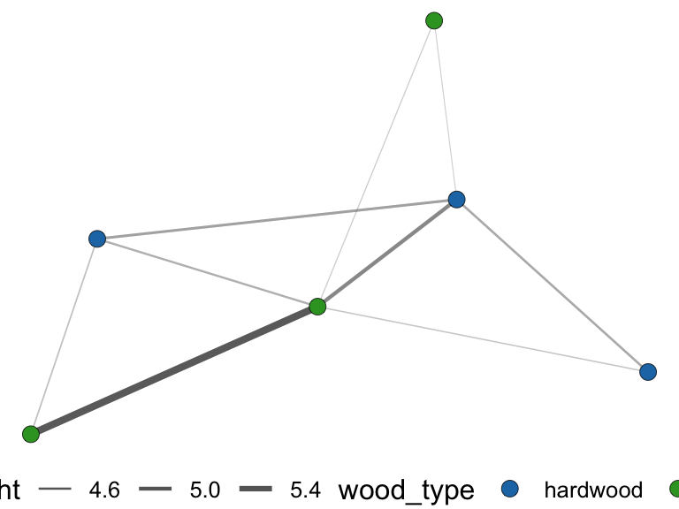

networks
A network is one of the few pictures that can show you a relationship rather than a value. Nodes are things; edges are connections between them. That is the whole data structure, and it is deceptively simple, because everything that matters about a network depends on a question the picture never answers for you: what does an edge mean?
There are two quite different ways to end up with a network, and the difference runs through this entire chapter.
Sometimes you build the network. You start with a data matrix — samples measured on many variables — compute how similar every sample is to every other, and draw an edge wherever two samples are similar enough. Here an edge means “these two resemble each other”, and you decided how much resemblance counts.
Sometimes you are given the network. Somebody hands you a list of connections that were observed in the world: journeys taken, messages sent, proteins that bind, posts that can see one another. Here an edge means “this actually happened”, and you did not choose anything.
The organising idea of this chapter, and the thing worth carrying away from it:
What a hub means depends entirely on what an edge means. In a similarity network an edge means “these two are alike”, so a hub — a node connected to everything — is a mixture, something intermediate that belongs to no group in particular. In a transit or interaction network an edge means “these two are connected”, so a hub is the busiest, most central place in the system. Same topology, opposite significance. Reading a network without knowing what its edges mean is how people get networks wrong.
Part 1 covers networks you build. Part 2 covers networks you are given. Part 3 is about reading either one honestly.
part 1 — networks you build
from a data matrix to a distance matrix
The starting point is an ordinary data matrix: samples in rows, measurements in columns. To ask how similar two samples are, we need a distance between them, and runMatrixAnalysis() will compute one for us with analysis = "dist".
wood_dist <- runMatrixAnalysis(
data = wood_smoke,
analysis = "dist",
column_w_names_of_multiple_analytes = "compound",
column_w_values_for_multiple_analytes = "abundance_mg_g",
columns_w_sample_ID_info = "species",
na_replacement = "zero",
scale_variance = TRUE
)
## Some analytes have zero variance and will be assigned a value of zero in the scaled matrix.Note scale_variance = TRUE. Distances are computed across all the compounds at once, so a compound measured in large numbers would otherwise dominate the distance purely because of its units. Scaling puts every variable on comparable footing first. This is the same concern that comes back in clustering and in PCA.
melting a distance matrix into an edge list
A network is drawn from an edge list — a table with one row per connection. So we need to turn the distances into rows of from, to, weight.
wood_edges <- as.data.frame(as.table(as.matrix(wood_dist)))
colnames(wood_edges) <- c("wood_1", "wood_2", "distance")
wood_edges <- wood_edges %>% filter(distance > 0) %>% mutate(edgeweight = 1 / (1 + distance) * 100)Two things just happened, and the second is the one students get backwards.
First, a distance matrix is symmetric — it contains both A-to-B and B-to-A, plus a diagonal of zeroes where every sample is compared with itself. The filter(distance > 0) drops the diagonal, and the block below drops the duplicated direction, so each pair appears once.
# Build an order-invariant pair ID so A-B and B-A map to the same key.
key <- paste(pmin(wood_edges$wood_1, wood_edges$wood_2), pmax(wood_edges$wood_1, wood_edges$wood_2), sep = " | ")
# Mark only rows that appear in mirrored pairs (both directions present).
dup_rows <- duplicated(key) | duplicated(key, fromLast = TRUE)
# Keep the mirrored-pair rows and drop one-direction-only links.
wood_edges <- wood_edges[dup_rows, ]Second, and more importantly: distance and similarity run in opposite directions. A small distance means two samples are alike. But an edge weight is drawn thick when it is large. If you feed raw distance in as the edge weight, your plot will draw the most dissimilar pairs as the most strongly connected — a picture that is exactly backwards, and one that looks perfectly plausible. That is what edgeweight = 1 / (1 + distance) * 100 is for: it inverts distance into similarity. Whenever you build a network from distances, stop and check which way round your weight runs.
the threshold is the analysis
A distance matrix connects everything to everything — every pair of samples has some distance, so the complete network has an edge for every possible pair. That picture is useless. To get a network worth looking at, you keep only edges above some similarity cutoff:
net <- buildNetwork(
edgelist = filter(wood_edges, edgeweight > 4.3),
node_attributes = select(wood_smoke, species, wood_type)
)For buildNetwork(), the edgelist should have node names in columns 1 and 2 (wood_1, wood_2 here). If a third column is present it is treated as the edge weight, and any additional columns are carried through as edge attributes. node_attributes is joined onto the nodes so you can colour them by something you know about the samples.
Now — where did 4.3 come from? This is the part of the procedure that is easiest to skip past and hardest to defend. The threshold is not a formatting choice; it is the analysis. Set it too low and every node connects to every other: a hairball that says nothing. Set it too high and the network falls to dust, a scatter of isolated points. In between, structure appears — and which structure appears depends on where you put the line.
So look at what the choice is doing:
thresholds <- c(2, 3, 4, 4.3, 5, 6)
data.frame(
threshold = thresholds,
edges_kept = sapply(thresholds, function(t) nrow(filter(wood_edges, edgeweight > t)))
)
## threshold edges_kept
## 1 2.0 30
## 2 3.0 30
## 3 4.0 22
## 4 4.3 18
## 5 5.0 2
## 6 6.0 0The honest way to report a network is to say what cutoff you used and to have looked at what happens either side of it. If the grouping a reader sees only exists at one very specific threshold, it is an artefact of the cutoff, not a finding about the samples.
plotting the network
buildNetwork() returns node and edge coordinates from a force-directed layout, ready for ggplot. Edges are drawn with geom_segment(), nodes with geom_point().
ggplot() +
geom_segment(
data = net$edges,
aes(
x = x, y = y, xend = xend, yend = yend,
linewidth = edgeweight,
alpha = edgeweight
),
color = "grey40"
) +
geom_point(
data = net$nodes,
aes(x = x, y = y, fill = wood_type),
shape = 21, size = 3.2, color = "black", stroke = 0.2
) +
# ggrepel::geom_text_repel(
# data = net$nodes,
# aes(x = x, y = y, label = species),
# size = 2.5,
# max.overlaps = 40
# ) +
scale_fill_manual(values = c("hardwood" = "#1f78b4", "softwood" = "#33a02c")) +
scale_linewidth_continuous(range = c(0.2, 1.4)) +
scale_alpha_continuous(range = c(0.15, 0.8)) +
guides(alpha = "none") +
theme_void() +
theme(legend.position = "bottom")
Remember what an edge means here. Two woods are joined because their smoke chemistry resembles one another’s. A wood sitting in the middle, touching everything, is not the most important wood — it is the most average one, the sample whose chemistry is intermediate enough to look a bit like everybody. That is the opposite of what a hub will mean in Part 2.
part 2 — networks you are given
edges as observed facts
Everything in Part 1 was derived: we computed the edges ourselves out of a data matrix, and we chose the rule that put them there. Now consider a network nobody computed. An origin-and-destination table of journeys. A ledger of dispatches sent between garrisons. A record of which proteins were observed to bind which. Here the edge list is the raw data. You did not pick a distance measure and you did not pick a threshold, because there was nothing to pick — the edges are observations.
buildNetwork() already accepts a bare two-column edge list, with weights optional, so no new tooling is needed for this half of the chapter.
Three things become available that were not available in Part 1:
Direction. An observed edge often has a direction: A sent to B is not the same fact as B sent to A. A distance is always symmetric, so a derived network can never be directed. And in a directed network, the asymmetry is often the finding — a node that sends far more than it receives is doing something structurally different from one that is balanced.
Weight as a count. An edge can carry how many times the thing happened, which is a real quantity in the world, not a transformation of a distance.
Structure. Because the edges are facts rather than similarities, questions about the shape of the graph become meaningful: how many separate components are there, which nodes hold them together, and what breaks if a node is removed.
node summaries: degree and volume
The simplest node-level summary is degree — how many other nodes a node connects to. In base R that is one line over both ends of the edge list:
table(c(edges$from, edges$to))If the edges carry counts, you can also ask for strength, or total volume: group by node and sum the traffic over both ends. That is group_by() and summarise() from the wrangling chapter, applied to a network.
volume is not importance
Here is the lesson this half of the chapter exists for, and it is one you cannot demonstrate on a derived network at all.
The busiest node in a system can be structurally irrelevant, and a very quiet node can be holding the whole thing together.
On a verified passenger-movement network of twenty stations:
- The busiest station carries around 40,000 journeys — 301% more than the runner-up. Delete it, and the network is completely unchanged: two components before, two components after.
- The critical station ranks nineteenth of twenty by volume — nearly the quietest in the system. Delete it and the network splits: two components become three. It is the sole articulation point, with betweenness eight times the next station’s.
Ranking your nodes by how much traffic they carry would put the station that actually matters second from last. This is the same lesson that co-expression analysis exists to teach in biology — you cannot find regulators by ranking expression level — and it has a sharp mathematical reason for living in Part 2 rather than Part 1. In a correlation network, a gene cannot correlate above 1/√2 ≈ 0.707 with two unrelated programmes at once, so genuine connector nodes, and therefore articulation points, are effectively impossible to observe. Only a relational network can show you this.
components and critical nodes
- Components: which sets of nodes can reach each other at all. Counting components before and after removing a node is the cheapest possible test of whether that node is load-bearing, and it needs nothing beyond base R.
- Articulation points and betweenness: the formal version of the same question — which node’s removal disconnects the graph, and which nodes sit on the most paths between other nodes.
part 3 — reading networks honestly
Three cautions, all of which apply whichever kind of network you have.
Layout is arbitrary. The positions of the nodes carry no information. A force-directed layout is a physics simulation run until it settles, and it settles somewhere different every time unless you fix the seed. Two plots of the same graph can look nothing alike, and neither is more correct. Never read distance-on-the-page as distance-in-the-data; the only real content is which nodes are joined.
What an edge means determines what a hub means. This is where the chapter began and it is worth ending on. A central node in a similarity network is the least distinctive sample you have. A central node in an interaction network may be the most important thing in the system. The topology cannot tell you which situation you are in — only knowing where the edges came from can.
Sometimes a network is a hairball hiding a table. A network is the right picture when the connections are the finding. If what you actually want to say is “these five samples have high values and these five have low values”, a network will say it far worse than a bar chart. Before drawing one, ask what a reader is supposed to learn from an edge. If you cannot answer, you want a different plot.
further reading
Network Analysis and Visualization with R and igraph. Katherine Ognyanova’s widely used workshop notes, covering edge lists, layouts, degree, centrality and community detection, with worked R code throughout.
Network structure and minimum degree. Seidman’s paper introducing k-cores, a durable and easily computed way of describing how densely connected the interior of a network is.
ggraph and tidygraph. Thomas Lin Pedersen’s grammar-of-graphics approach to networks, useful once you want more control over layout and edge drawing than a helper function gives you.